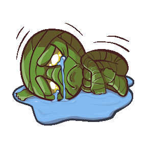

DevSecOps in Kubernetes
Emelie Tham
Philip Wester
Agenda
What and Why DevSecOps?
What is Kubernetes?
Kubernetes Security
Conclusion
The What and Why of DevSecOps
Before DevOps...

DevOps bridges the gap between development and operations
Next step...?

...DevSecOps!
Incorporating security to DevOps

DevSecOps is the application of DevOps practices through the lens of security by shifting security left, automating security tests and monitoring with the aim of making communication between developers and security engineers more effective.
Let's not leave security engineers out of the DevOps circle...
... when there are immense benefits of including them! 😃
Kubernetes
An open-source system that automates the deployment, scaling and mangement of containerized applications.
Kubernetes Security
Assumption that Kubernetes is secure by default...
Security cannot be an afterthought
Several security vulnerabilities have been found:
- Billion Laughs vulnerability
- runC vulnerability
Tesla Kubernetes Cryptojacking Exploit
The 4C's of Cloud Native Security

The 4C's of Cloud Native Security

Important Security Principles
Defense in Depth
Least Privilege
Reduce Attack Surface
Warning
Do not do this At home!
For the sake of the presentation we assume either:
- The Kubernetes API is exposed
- One or more services running on Kubernetes is exposed
Don’t expose your API or service if you do not have to!
⚠
Securing Kubernetes Cluster
1. Controlling access to Kubernetes API
Use TSL for all API traffic
API Authentication
API Authorization
Kubernetes Authentication
Used for both Service and Users accounts
Useless without Authorization
Kubelets allow unauthenticated access to their API by default
Authentication Methods:
- Certificates
- Bearer Tokens
- Authenticating proxy
- HTTP basic authentication
Kubernetes Authorization
Role-Based Access Control (RBAC)
Attribute-based access control (ABAC)
Kubelets API authorization
Access Control with RBAC
2. Controlling access to the Kubelet
Disable anonymous access
Ensure requests are authorized
Limit permissions of kubelets
Turn off the read-only port
3. Controlling capabilities of workload/user at runtime
Limit resource usage on cluster
Control container's privileges
Preventing loading of unwanted kernel modules in containers
Restrict network access
Restrict cloud meta data API access
Controlling access nodes' pods
4. Protecting clusters from compromise
Restrict access to etcd
Enable audit logging
Rotate infrastructure credentials frequently
Review third party integrations
Encrypt secrets at rest
Kubernetes does NOT protect your cluster from bad practices
Kubernetes CAN limit the damage in case of a breach, if implemented correctly
Conclusion
Any Questions?
References
-
Kim Carter, Francois Raynaud on DevSecOps, IEEE Software, (2017)
-
Nipuna Dilhara, CSA Releases “The Six Pillars of DevSecOps” Report. https://medium.com/@nipunadilhara/how-kubernetes-advances-devsecops-117572983b5a Accessed on [2020-04-8] (2020)
-
Technology For You, How Kubernetes Advances DevSecOps. https://www.technologyforyou.org/csa-releases-the-six-pillars-of-devsecops-report/ Accessed on [2020-04-8] (2019)